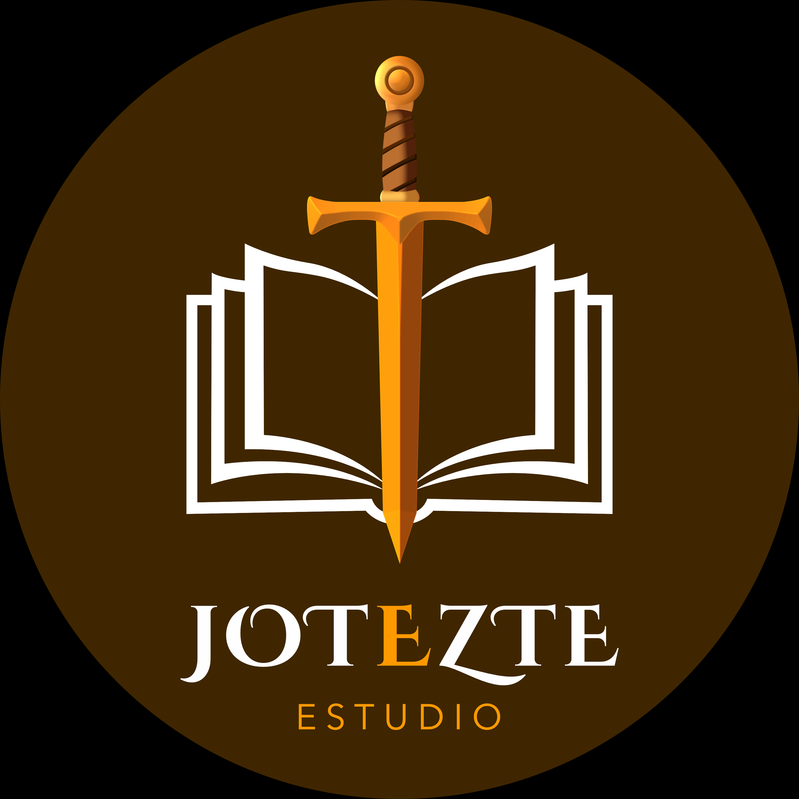

«Criterio en la mirada. Rigor en el código.»
Dirijo Jotezte Studio, mi espacio independiente de diseño e interfaces. Uno la composición y el ritmo de las artes visuales con la ingeniería web: productos digitales donde cada margen, peso tipográfico y transición responde a una función clara y creativa.

Pensar la imagen. Construir la interacción.
Combino la mirada compositiva de las artes visuales con el método empírico del diseño digital: experimentar, medir la jerarquía en pantalla y comprobar que cada elemento aporte valor antes de llegar a producción.
En desarrollo web traduzco esa calibración visual en código limpio y componentes funcionales. Construyo productos digitales donde el diseño visual guía al usuario y la arquitectura de software asegura su rendimiento.
- Lenguaje
- HTML5 · CSS3 · JavaScript · Bases de datos
- Disciplina
- Figma · Wireframing · Sistemas de diseño
- Origen
- Desarrollo de Software · Artes Visuales · UI & UX
Proyectos seleccionados
03
-
2025
Caramelos — Plataforma & App para mascotas
Diseño de producto y maquetación de interfaz: arquitectura de información, flujos de cuidado y prototipado interactivo orientado a la experiencia del usuario y su mascota.
-
2024
Jotezte Studio — Práctica independiente & Diseño editorial
Dirección visual y producción gráfica freelance: diseño de identidad, maquetación de libros digitales e impresos, portadas editoriales y composición gráfica con estricto criterio tipográfico.
-
2024
Sistema de diseño — identidad editorial
Guía de estilo y tokens de diseño para una marca editorial, documentando tipografía, espaciado y color como reglas reutilizables, no decisiones sueltas.